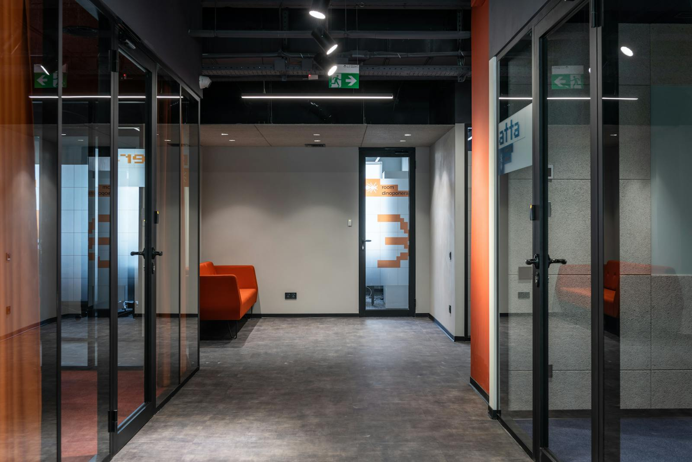

02 — SELECTED SYSTEMS
Surfacing with proof. Systems first.
AI-Adaptive VR Clinical Training
SYSTEM 01 · EDWARDS LIFESCIENCES · ACTIVE BUILD
ROLESolo — UX → 3D → code → AI
STATUSActive build, 2026
SCOPEFull-stack VR learning modules
TRAINEESClinicians
AI LAYERAdaptive assessment
PUBLIC ARTIFACTS2 system architectures
THE STAKES: the trainee's next patient is real. Every design decision in the loop is downstream of that.
How a Heart Valve Works
SYSTEM 02 · INTERACTIVE EXPLAINER · SHIPS AUGUST
FORMATScroll-driven interactive page
SUBJECTValve mechanics
THE BARCiechanowski-grade interaction
HOSTDocks on this site
STATUSIn build — Aug 2026
BUILDHand-built for the web
THE BET: an explainer earns attention by letting you push on the system until it pushes back.
OPEN LIVE PREVIEW →
IYH Digital Twin
SYSTEM 03 · USC IOVINE & YOUNG
PLATFORMNVIDIA Omniverse
SUBJECTIovine & Young Hall
TYPEDigital twin
ROLESolo — model → material → scene
THE POINT: a twin is only useful if you can trust it. Fidelity isn't polish here — it's the feature.
OPEN CASE FILE →


SuzChews
SYSTEM 04 · PRODUCT & SYSTEM DESIGN
TYPEProduct + algorithm + brand
SCOPEScience → simulation → team
STATUSComplete case study
ROLEFounder-designer
ORIGIN: first sketched in 2023, during his dad's health crisis — then built into a full product system at USC.
OPEN CASE STUDY →

03 — THE PATH
The full record. Chapters, not a résumé.
-
2019–23
TWO LANES
Pitching and premed, in parallel — performance and medicine from the start.
-
2023
UCHICAGO — KRON LAB
Cancer-immunology research on TET2; symposium award. Then a pitching injury and his dad's diagnosis ended both lanes in the same season.
TET2 RESEARCH -
2024
FRANKLIN SWITZERLAND
The reset — a semester in Lugano, fourteen countries with a backpack.
-
2024–25
THE JEL SERT COMPANY
R&D bench by day; brand films on the side.
-
2025
USC IOVINE & YOUNG
The pivot to spatial computing — building toward the first Human Technology Interaction degree.
-
2026
EDWARDS LIFESCIENCES
Solo designer-engineer on the systems in 02 — plus the tools nobody asked him to build.
-
NEXT
WHAT COMES NEXT
Go deep on a team designing what comes next. Then build his own.